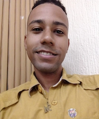

Manuel Alejandro Pumar Carrasquero | WDD 130

Every morning when I get up I ask myself if I want to be happy or sad, I almost always choose to be happy, I believe that we are agents with the ability to choose.... Even that. I love soccer, both watching and playing it, spending time with my family and friends and above all I love living the gospel of Jesus Christ.